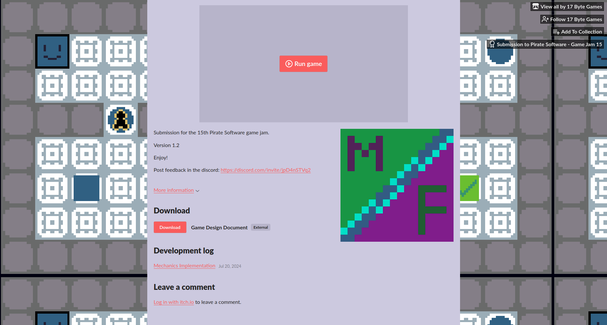
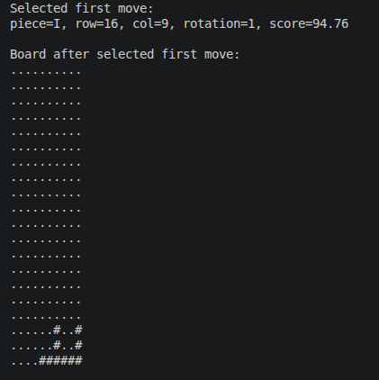
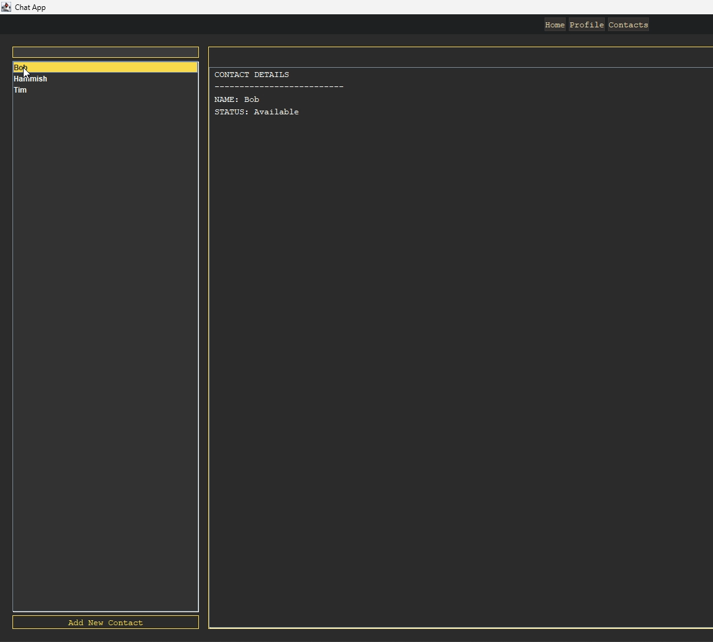

Projects
Below is a list of projects I have been a part of. Some are personal projects and others have been completed as part of my degree.
Below is a list of projects I have been a part of. Some are personal projects and others have been completed as part of my degree.

This was the first game I made and published as a submission to a game jam. It was created using the Godot game engine and featured several levels of puzzle-baseed gameplay each with new mechanics building upon previous solutions. The key challenge in creating this game was a system to split and join the player upon stepping onto a 'mirror' tile. As two player charachters could step on two different mirror tiles at the same time to join together, priority was given to one of the two controllable objects though no visual distinction exisited. If I were to revisit this I would add a visual signifier of which of the two objects is the one given priority.
View Project
As part of one of my second year modules I created an AI search algorithm to play TETRIS. Though the project itself was a group work assignment the design and implementation of the AI was my own work. It worked by taking a read of the board and mapping each potential move to a graph. Each move was then assigned a score based on a function which looked at the three factors; space on the board, lines cleared and pockets created.
View Project
This was created as part of a first year data structures group project. It utilised Java Swing to create the UI elements and Java for the data handling and user interaction. I was primarily responsible for creating the UI, design and linking up the various classes created by the other group members. From this I gained experience in creating programs as part of a group which aided in my ability to create modular and readable code.
View Project